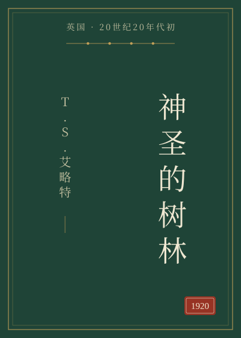
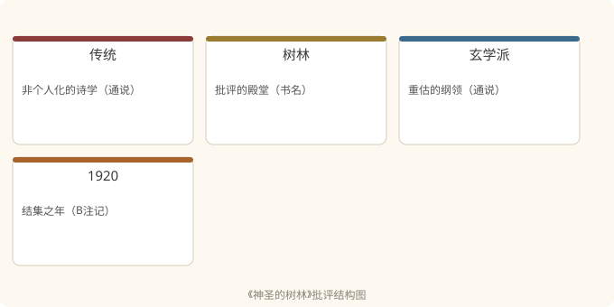

神圣的树林
一、基本信息
| 作者 | 艾略特 |
|---|---|
| 成书/出版 | 1920年（作者页注记：Britannica——The Sacred Wood (1920)） T.S. Eliot — Encyclopaedia Britannica（百科全书） |
| 国别/地区 | 英国 |
| 时代 | 近代 · 20世纪20年代初 |
| 体裁 | 批评文集 |
| 语言 | 英语 |

《神圣的树林》批评结构图（主题·结构图）
二、创作背景
作者页注记：神圣的树林——'批评文集（Britannica：The Sacred Wood (1920)）'。
Britannica：艾略特——《传统与个人才能》等名文出处（待核——B注记未载篇目）。
题材（通说待核）：'传统与个人才能'、'玄学派诗人'等批评纲领。
三、内容脉络
（通说待核）'传统'：非个人的诗学。
（通说待核）'客观对应物'（objective correlative——通说待核——篇目归属待核）。
四、主要人物表
| 人物 | 身份 | 说明 |
|---|---|---|
| （批评文集无人物） | —— | 批评 |
五、主题与艺术特点
- '传统与个人才能'的诗学（通说待核——篇目归属待核）。
- 批评的现代转向（B注记语境）。
- '非个人化'理论（通说待核）。
六、影响与评论
- Britannica：The Sacred Wood (1920)（作者页注记）。
T.S. Eliot — Encyclopaedia Britannica（百科全书） - Britannica：艾略特批评家身份（作者页交叉）。
T.S. Eliot — Encyclopaedia Britannica（百科全书）
七、阅读建议
难点
- 批评术语（客观对应物等）。
- 17-19世纪英国文学史底本。
- 《神圣的树林》中译名（《传统与个人才能》单行本说）待核。
- 英文原版（公有领域状态待核）。
艾略特批评首选；与《荒原》对读。
八、待核实
- 篇目（'传统与个人才能'1921说——收录与否）核对。
- 1920年出版细节待核。
- '客观对应物'篇目（《哈姆雷特》文说）待核。